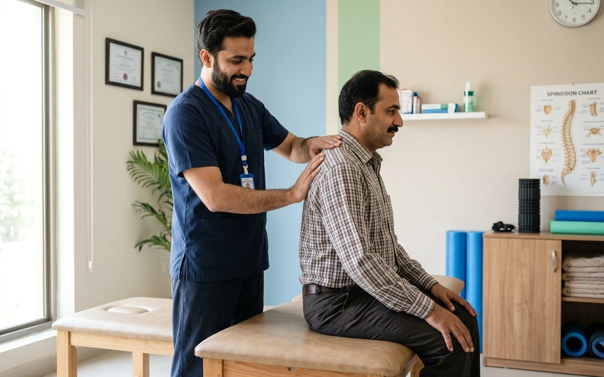
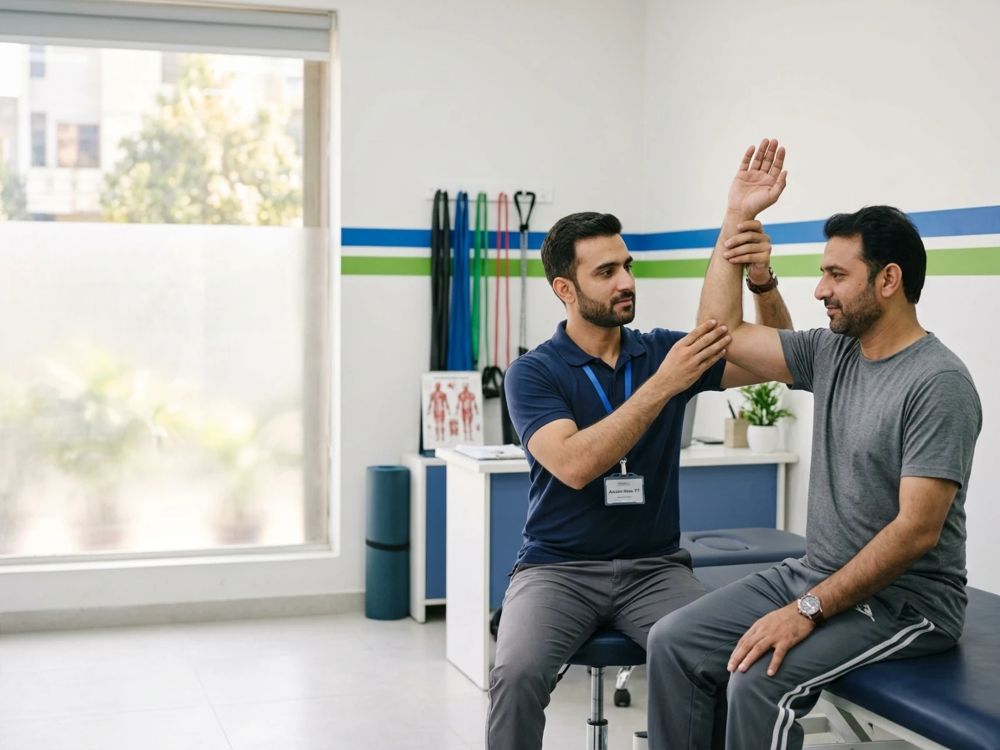
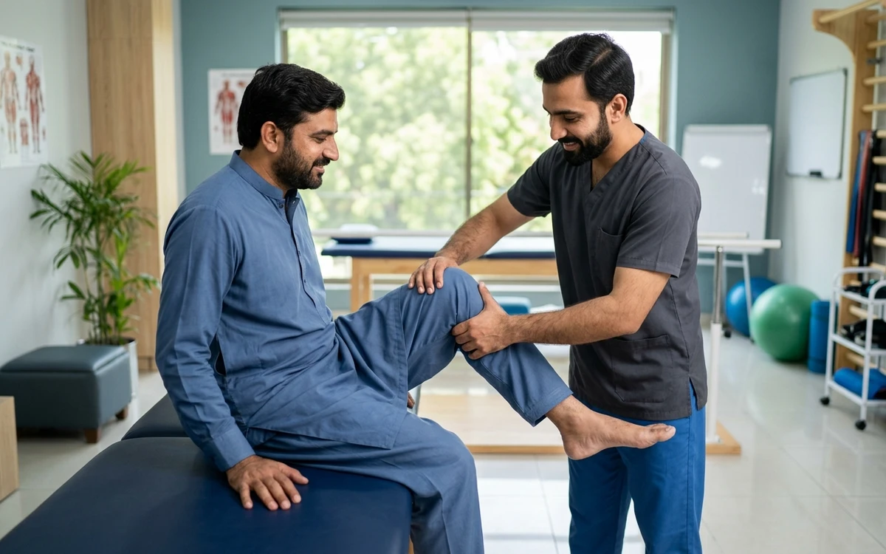
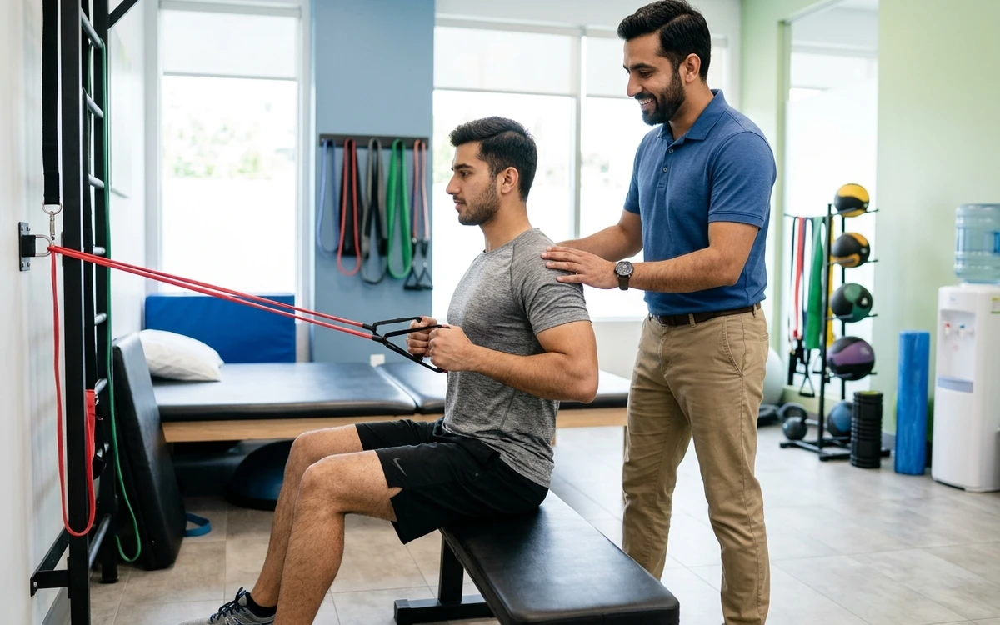
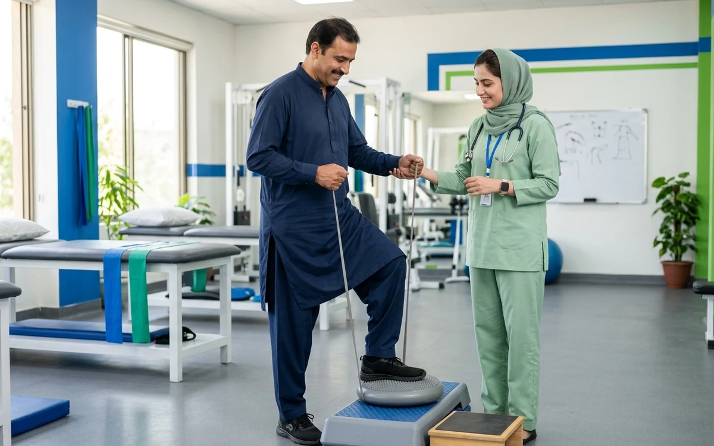
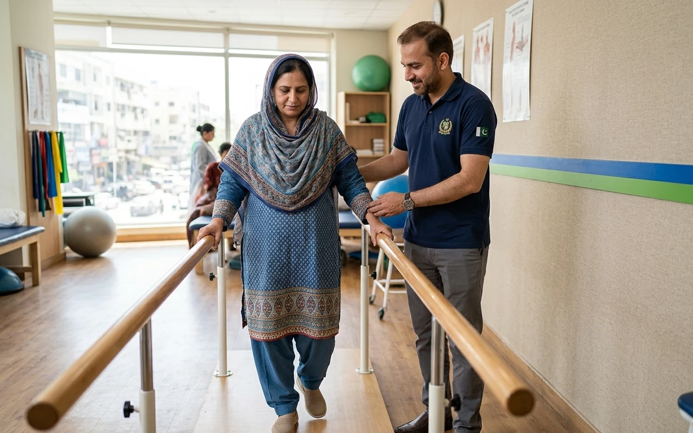
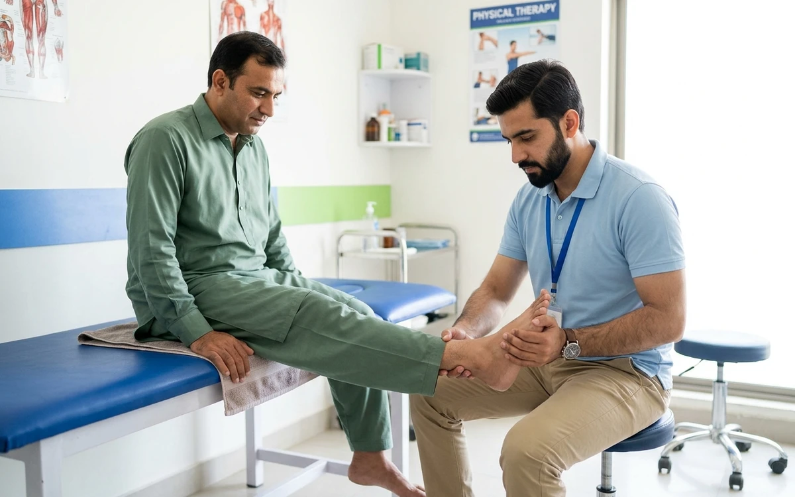
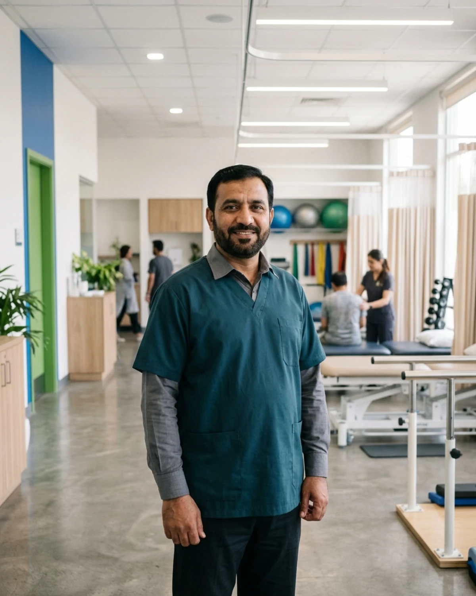
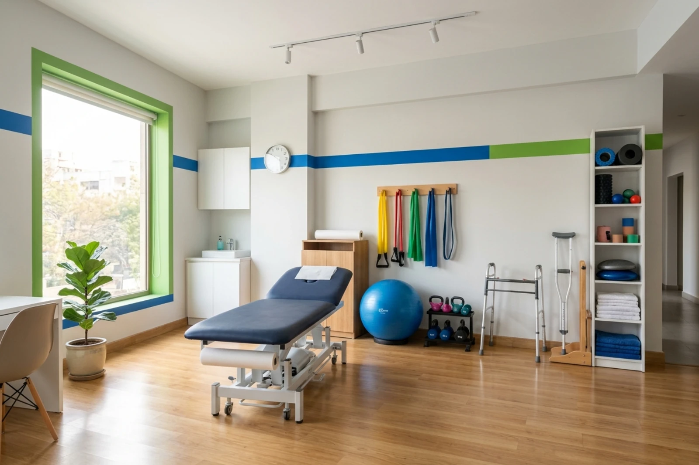
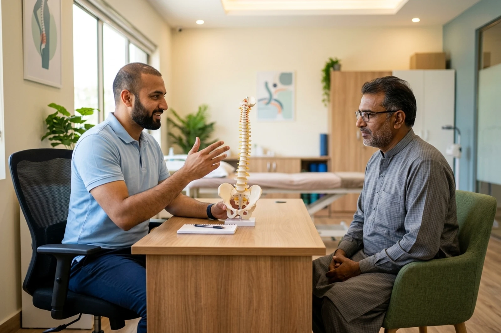

.png)

Spine & Posture
Back and Neck Pain
Assessment-led physiotherapy support for mobility limitations, muscular discomfort and everyday movement concerns.
Topic scope must be reviewed and confirmed by the clinic before publication.
PHYSIOTHERAPY & PAIN CARE • PAKPATTAN
A proposed digital experience for Physio Clinic and Dr. Talib Hussain in Al Fareed Garden, Pakpattan, bringing treatment information, clinic updates and directions together in one clear place.
Demonstration concept — contact Physio Clinic directly via telephone (0322-4658174) for appointments and inquiries. Directions open Google Maps.

Physio Clinic located at Al Fareed Garden, Pakpattan. Please connect via our official Facebook page to confirm current consulting hours and clinic details before your visit.
PHYSIOTHERAPY FOCUS AREAS
Explore representative physiotherapy and rehabilitation focus areas. Detailed clinical descriptions and approved treatment approaches remain subject to confirmation by the clinic.

Spine & Posture
Assessment-led physiotherapy support for mobility limitations, muscular discomfort and everyday movement concerns.
Topic scope must be reviewed and confirmed by the clinic before publication.

Musculoskeletal Care
Individual guidance for joint stiffness, soft-tissue concerns and movement-related discomfort.
Topic scope must be reviewed and confirmed by the clinic before publication.

Sports Recovery
Progressive rehabilitation designed around safe movement, strength and return to normal activity.
Topic scope must be reviewed and confirmed by the clinic before publication.

Functional Recovery
Structured recovery support following an injury, based on individual mobility and functional goals.
Topic scope must be reviewed and confirmed by the clinic before publication.

Neuromuscular Mobility
Movement and functional rehabilitation support for suitable neurological conditions, subject to clinical assessment.
Topic scope must be reviewed and confirmed by the clinic before publication.

Lower Limb Care
Physiotherapy guidance for heel discomfort, walking limitations and lower-limb movement concerns.
Topic scope must be reviewed and confirmed by the clinic before publication.
Focus areas are presented for demonstration purposes and must be reviewed and approved by the clinic before publication.

PRACTITIONER OVERVIEW
Dr. Talib Hussain is presented as the physiotherapy and pain-care practitioner associated with Physio Clinic in Pakpattan.
This demonstration section is ready for the clinic’s verified qualifications, professional registration, experience and approved treatment approach. These details must not be published as facts until supplied or confirmed by the practitioner.
CARE BUILT AROUND MOVEMENT


Clear information can help patients understand what to expect before contacting the clinic. The final website can present the real clinic environment, treatment facilities and practitioner-led approach after the clinic supplies approved original photographs.
Your Visit
Review the clinic’s representative treatment areas and identify the information you want to discuss.
Use the official Facebook page for current clinic updates and appointment guidance until the direct contact number is confirmed.
Confirm the current schedule, practitioner availability and exact directions before visiting Al Fareed Garden.
Patient Confidence
This demonstration presents verified location and official contact channels without publishing unverified claims, ratings, or simulated reviews.
Consultation and functional evaluation tailored to individual mobility needs, symptom history and daily movement goals.
Practical, movement-based physical therapy methods designed to support functional recovery and everyday comfort.
Structured exercise planning and mobility guidance to help support safe physical progression over time.
Located in Al Fareed Garden, Pakpattan, offering a recognized local setting with directions available on Google Maps.
Location & Directions
Use Google Maps for live directions to Physio Clinic in Al Fareed Garden, Pakpattan. Please confirm the complete street address, current hours and appointment arrangements directly with the clinic before travelling.
Interactive Google Map is blocked by default to protect your privacy. Loading the map will connect your browser directly to Google’s servers.
Frequently Asked Questions
Physio Clinic is located at Al Fareed Garden, Pakpattan, Punjab, Pakistan. Patients can view the location on Google Maps or use the directions links on this page before travelling.
Dr. Talib Hussain is presented as the physiotherapy and pain-care practitioner associated with Physio Clinic in Pakpattan. Verified qualifications, professional registrations and official background details will be published once confirmed by the practitioner.
Common concerns include back and neck pain, joint stiffness, musculoskeletal discomfort, sports and activity-related injuries, post-injury recovery, heel and foot pain, and general mobility limitations.
Yes. Please call 0322-4658174 or contact via the official Facebook page (facebook.com/physiopakpattan) to verify current visiting hours, practitioner availability and consultation arrangements before travelling to Al Fareed Garden.
No. The treatment focus areas shown here are representative examples prepared for demonstration purposes. All clinical services and care pathways must be reviewed and approved by Dr. Talib Hussain prior to publication.
No. This is an independent demonstration website concept developed by Bukhari AI for presentation purposes. It is prepared for review and can be finalized into the clinic's official website upon approval.
No. This demonstration website does not collect, process or store any patient health records or personal information, and does not provide an online booking system.
This website does not provide emergency medical advice or urgent healthcare. In the event of a medical emergency, please visit the nearest hospital emergency department immediately or contact local emergency services.
A WEBSITE CONCEPT PREPARED FOR YOUR CLINIC
This demonstration brings Physio Clinic’s existing identity, physiotherapy focus, official Facebook presence and Google Maps location into one modern mobile-first experience. With your approval, Bukhari AI can add your verified qualifications, confirmed treatments, current contact details, clinic timings and original photographs, connect your domain and prepare the finished website for launch.
Your clinic identity • Direct patient engagement • Privacy-conscious design • Hostinger-ready delivery
Finalize This Website with Bukhari AI